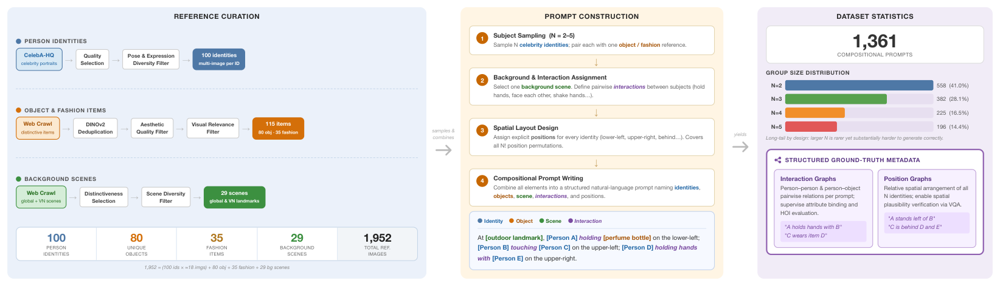
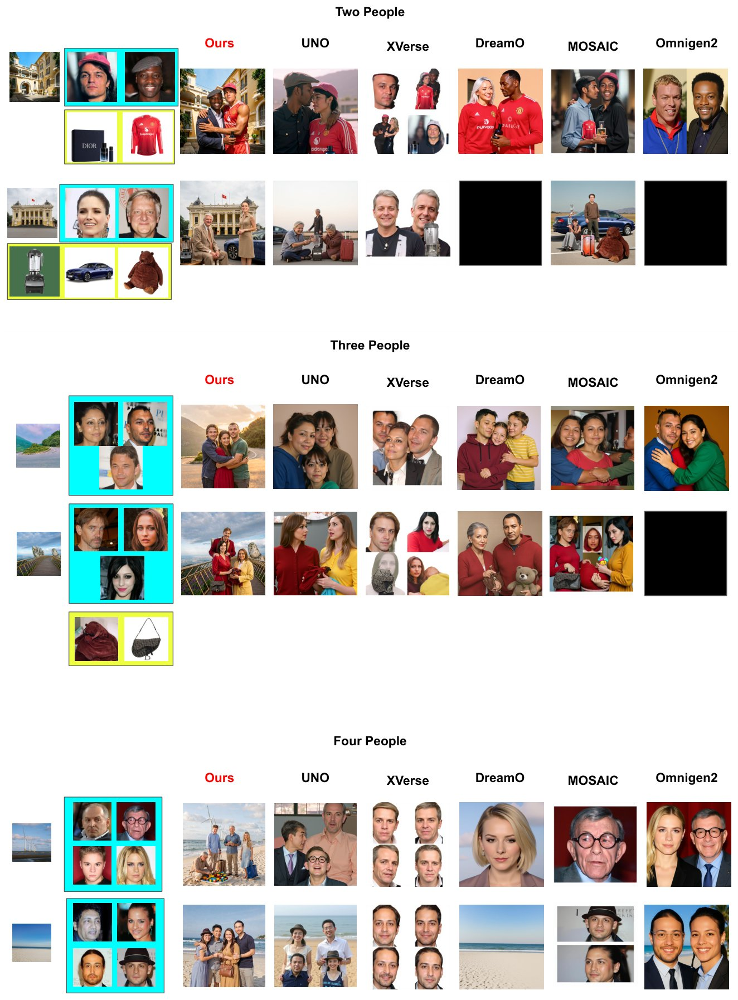
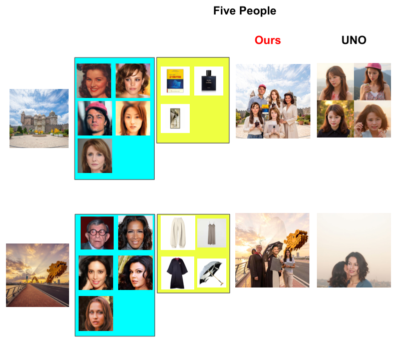

Multi-subject reference-based image generation requires jointly preserving multiple human identities, binding per-person objects and fashion items, and respecting a specified background scene, a regime where current diffusion models remain brittle. Existing benchmarks evaluate only one axis at a time and none jointly captures multi-identity composition with human-object interaction, background grounding, and spatial plausibility. We introduce CogCanvas, a benchmark of 1,952 curated reference images spanning 100 celebrity identities, 115 distinctive objects and fashion items, and 29 real-world background scenes including Vietnamese landmarks, from which we construct 1,361 compositional prompts covering 2-5 person group sizes. The curation pipeline combines DINOv2-based deduplication, automated filtering, human review, and structured interaction and position annotations that make individual relations checkable.
CogCanvas supports three tasks, reference-based multi-human-object generation (primary), text-to-image compositional generation, and reference retrieval, under a unified six-axis evaluation protocol. We introduce two metrics tailored to the multi-reference setting: BG-Sim, which scores background fidelity on SAM 3-masked regions via DINOv3 feature similarity, and Attr-VQA, which uses a multimodal LLM to verify per-subject attribute binding and inter-person interactions against the structured graphs. Benchmarking five existing methods and a training-free sequential-inpainting reference pipeline shows that object and fashion fidelity drops sharply as group size grows from two to five. A 46-image human study finds moderate agreement between Attr-VQA and human judgments (Spearman ρ = 0.645).
CogCanvas evaluates multi-subject reference-based image generation: given reference images for each identity, a model must compose a scene that preserves all identities, binds the correct objects and fashion items to each person, and realizes the described spatial arrangements and interactions. The references span 100 celebrity identities, 80 unique objects, 35 fashion items and 29 background scenes, and each prompt involves 2-5 persons.
Every prompt is annotated with structured interaction and position graphs that serve as ground truth. Generated images are evaluated on six axes, including two new metrics: BG-Sim for background fidelity and Attr-VQA for per-subject attribute binding and interactions.

Figure 2. CogCanvas data curation pipeline. Left: Three disjoint reference pools are curated independently: person identities from CelebA-HQ, object/fashion items via web crawling with DINOv2 deduplication and two-stage filtering, and background scenes selected for global diversity. Center: Compositional prompts are constructed by sampling N ∈{2, . . . , 5} identities, assigning per-person object/fashion references, selecting a background scene, defining pairwise interactions, and specifying explicit spatial layouts covering all N! position permutations. Right: The resulting 1,361 prompts follow a long-tail group-size distribution and are annotated with structured interaction and position graphs that serve as ground-truth supervision for attribute-binding and spatial-plausibility evaluation.
Table 2. Quantitative comparison on CogCanvas by group size N. Seq. ref. is the training-free sequential reference pipeline. Best results are in bold, second-best underlined. ↑: higher is better. BG-Sim is reported only where the method accepts a background reference. Best in bold, second best underlined.
| N | Method | ID-Sim ↑ | DINO-Sim ↑ | CLIP-T ↑ | BG-Sim ↑ | Aesth. ↑ | Attr-VQA ↑ |
|---|---|---|---|---|---|---|---|
| 2 | OmniGen2 | 13.07 | 33.16 | 62.23 | - | 51.63 | 33.04 |
| UNO | 23.23 | 28.03 | 62.11 | - | 55.24 | 35.12 | |
| DreamO | 3.07 | 5.98 | 58.79 | - | 44.42 | 14.45 | |
| XVerse | 42.33 | 32.96 | 61.60 | - | 39.73 | 7.80 | |
| MOSAIC | 9.93 | 4.77 | 57.29 | - | 44.01 | 11.22 | |
| Seq. ref. | 45.28 | 32.02 | 64.07 | 0.732 | 55.33 | 53.41 | |
| 3 | OmniGen2 | 0.62 | 1.74 | 57.57 | - | 37.11 | 3.68 |
| UNO | 19.60 | 17.35 | 61.02 | - | 56.01 | 14.65 | |
| DreamO | 0.39 | 1.20 | 57.47 | - | 41.48 | 2.99 | |
| XVerse | 27.21 | 15.62 | 60.08 | - | 38.46 | 4.03 | |
| MOSAIC | 11.45 | 5.87 | 57.52 | - | 42.66 | 5.67 | |
| Seq. ref. | 32.61 | 30.14 | 61.23 | 0.633 | 55.21 | 37.18 | |
| 4 | OmniGen2 | 0.39 | 1.60 | 57.63 | - | 37.36 | 5.78 |
| UNO | 19.60 | 17.35 | 61.02 | - | 56.01 | 14.65 | |
| DreamO | 0.19 | 0.75 | 57.39 | - | 42.34 | 4.63 | |
| XVerse | 2.67 | 2.63 | 57.71 | - | 36.54 | 3.17 | |
| MOSAIC | 2.46 | 1.99 | 57.34 | - | 37.73 | 2.61 | |
| Seq. ref. | 20.14 | 19.48 | 58.32 | 0.611 | 56.12 | 35.52 | |
| 5 | OmniGen2 | 0.08 | 0.43 | 57.38 | - | 36.85 | 2.49 |
| UNO | 13.47 | 8.58 | 59.26 | - | 56.40 | 7.27 | |
| DreamO | 0.03 | 0.17 | 57.24 | - | 37.35 | 1.79 | |
| XVerse | 0.52 | 0.46 | 57.15 | - | 36.66 | 1.28 | |
| MOSAIC | 0.18 | 0.24 | 57.24 | - | 36.79 | 1.92 | |
| Seq. ref. | 18.31 | 16.72 | 57.98 | 0.610 | 55.21 | 9.48 |
At N = 2 the sequential reference pipeline (Seq. ref.) reaches ID-Sim 45.28 and Attr-VQA 53.41, compared with 42.33 (XVerse) and 35.12 (UNO) for the strongest existing methods. Attribute fidelity declines sharply as the number of subjects grows: at N ≥ 4, four of five existing methods have DINO-Sim at most 2.63, and the Attr-VQA of the pipeline falls from 35.52 at N = 4 to 9.48 at N = 5. BG-Sim is reported only where the method accepts a background reference.
Samples with two, three and four persons. The existing methods expose no conditioning channel for the background reference, and the specified scene is often replaced by a generic backdrop.

Figure 5. Qualitative comparison on multi-person samples (2, 3, and 4 persons) from CogCanvas. The results illustrate the performance of our model compared to representative baselines in maintaining identity consistency and background alignment across increasing numbers of subjects.
Samples with five identities and a specified background, comparing the sequential reference pipeline (Ours) with UNO.

Figure 6. Qualitative comparison on five-identities samples from CogCanvas. This figure demonstrates the model's capability in handling complex scenes with five distinct identities and specific background requirements.
@misc{nguyencogcanvas,
author = {Nguyen, Long-Bao and Le, Quang-Khai and Nguyen, Tam V. and Tran, Minh-Triet and Le, Trung-Nghia},
title = {CogCanvas: A Benchmark for Evaluating Multi-Subject Reference-Based Image Generation},
}